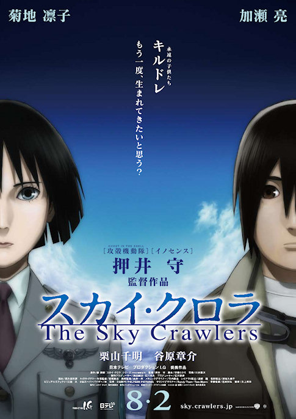

Az Ani Kuri tévéműsor mellé készült 15 db. egyperces animét 2007-2008-ban láthatták a japán nézők az NHK csatornán, mindegyiket más-más rendezte. Többek közt Makoto Shinkai, Michael Arias, Mamoru Oshii és Satoshi Kon.
Ami azt illeti sokkal előbb megtehettem volna, hogy megnézem ezt a filmet. Egészen pár héttel ezelőttig halogattam a dolgot, de végül nem volt más dolgom egyik este, ezért végül megnéztem. Úgy írom ezt mintha kötelező lett volna megtenni, vagy valami ilyesmi, de erről szó sincs. Sokszor gondoltam, hogy eljött a pillanat, hogy megnézzem Satoshi KonPaprika című zseniális animéjét, de valahogy mnindig elmaradt. Így utólag nézve pont a legjobbkor láttam, mert felrázott, ami az adott pillanatban nagyon jól jött. Előre elmondom, ki**szott jó film.
Satoshi Kon filmjei és sorozatai nem a legkönnyebben megérhető darabok közé tartoznak. Gondolkodni kell rajtuk, megmozgatják az elmét, a fantáziát. Ez a legjobb dolog, amit tehet, miközben olyan világot tár a néző szeme elé, amitől szó szerint eláll az ember lélegzete.
A filmben kifejlesztenek egy szerkezetet, mellyel betekintést lehet nyerni az emberek álmaiba, de egy nap valaki ellopja a titkos projekt egyik prototípusát. Azonnal elkezdenek nyomozni az ügyben, de nem sokat lehet tenni, akkor amikor álom és valóság egymásba olvad egy fantasztikus kép- és hangorgiában, mégis félelmetesen. A történetről nem vagyok hajlandó többet írni, ha érdekel valakit a film, akkor nézze meg.
Ha valaki szokott emlékezni az álmaira, akkor jól tudja, hogy igen sokszor nagyon furcsa dolgokat, „hülyeségeket” tud összeálmodni az ember. Az álmokban bármi megtörténhet, és meg is történik.
Van még mit bepótolnom Satoshi Kon életművéből, de amit a sci-fi, pszichothriller és más műfajok terén letett az asztalra, elismerésre méltó. Bátran ajánlom mindazoknak, aki szereti a jó animét, a jó filmeket és a nem mindennapi látomásokat. Ismétlem önmagam: Bravo, Satoshi Kon!
Ahogy legutóbb, most is egy sci-fi anime antológiáról írok egy rövid bemutatót.
Taku Mayumura története alapján Masao Maruyama producer keze alatt három, méltán híres rendezőt (Rintaro, Yoshiaki Kawajiri, Katsuhiro Ôtomo) szedtek össze, hogy Neo Tokyo címmel egy filmben vászonra vigyék a következő három nem mindennapi történetet.
Sajnos nem találtam meg az eredeti trailert, így nekem kellett összevadászni valamit a netről. A következőt sikerült:
Rintaro – Labyrinth-Labyrintos
Rintaro rendezte a híres, 2001-es Metropolis című animét, ami ha jól emlékszem világsiker volt, de ha nem az sem érdekel, mert én nagyon szeretem. A rendező viszonylag nehéz feladatot kapott azzal, hogy egyfajta keretet kellett készítenie, ami összefogja az egész filmet.
Rögtön a film elején egy igazán furcsa világba kerülünk, ahol egy kislány, Sachi és a macskája, Cicerone fogócskáznak. Játék közben pedig egy ingaórán keresztül egy rémisztő és számukra mégis érdekes és mulatságos labirintusba jutnak, melynek végén egy cirkusz áll. Egy bohóc várja őket a bejáratnál, aki utat mutat nekik, így vezetve át a nézőt az anime következő rövidfilmjébe.
Labyrinth-Labyrintos
Yoshiaki Kawajiri – The Running Man
Valahol a jövőben az emberek egyik kedvenc sporteseménye egy gyilkos „autóverseny.” Egy ilyen versenyre látogat el a történet narrátoraként szereplő újságíró. Egy cikket ír az eddigi legsikeresebb versenyzőről, Zach Hugh-ról, aki már tíz éve versenyez és minden futamát túlélte. Az újságíró, hogy miképpen, azt nem lehet tudni, bejut Hugh-hoz, aki éppen elmélyülten koncentrál. Ekkor az újságíró rájön, hogy Zach Hugh valamiféle telekinetikus képességgel rendelkezik, ugyanis koncentrációja során maga körül mindent összezúz valamiféle láthatatlan erő.
A verseny során Hugh minden ellenfele és maga Hugh is saját erejének áldozata lesz. Egy elhasznált, kiégett embert mutat be ez a film: „A szíve, amely valaha másokat olyan erősen buzdított már saját magát sem buzdította, csak megszokásból dobogott, mert erre képes volt.”
The Running Man
Katsuhiro Ôtomo – Construction Cancellation Order
Azt hiszem Katsuhiro Ôtomo munkásságát nem kell ecsetelnem, mert ezt szerintem több korábbi bejegyzésemben is megtettem, szóval most ezt át is ugrom, és rátérek a lényegre.
Egy dél-amerikai köztársaság, Aloana újonnan választott kormánya felbont egy korábban kötött, hatalmas szerződést az államnak épülő, és jelenleg félkész állapotban levő 444-es komplexumról. A kivitelező vállalat sietve kiküldi a teljesen automatizált építkezésre Tsutomu Sugioka-t felügyelőnek, hogy azonnal állítsa le azt, és hogy derítse ki mi történhetett a korábbi felügyelővel, akit a cég nem tud elérni. Hősünk meg is érkezik a dzsungel mélyén levő 444-es építkezésre, ahol a 444-1-es számú robot fogadja, és vezeti körbe. Sajnos Sugioka-nak nem sikerül a robottal leállíttatni a munkálatokat, és helyzete egyre kilátástalanabbá válik. A gépek egyszerűen nem engedelmeskednek az új felügyelőnek, az építkezés pedig folyamatosan nyeli a pénzt.
Tsutomu Sugioka majdnem arra a sorsa jut, ami a korábbi vezetőé lehetett, bezárják. Végül elpusztítja a 444-1-es robotot, elindul, hogy elpusztítsa a gépeket összekötő központot, ezáltal leállítva az egész építkezést. Eztán érkezik egy új utasítás, mely szerint azonnal folytatni kell az építkezést, mivel a kivitelezőnek sikerült megegyezésre jutni az új kormánnyal. Tsutomu Sugioka erről az üzenetről már nem értesül. Tökéletes bemutatása ez ember és gép ellentétének és egyben egymásra utaltságának.
Construction Cancellation Order
Sajnálom, hogy ez a poszt ilyen rövidre sikeredett, de most, éjfél felé már elég fáradt vagyok. Végszó!
Ugyan az egész film csak ötven perc, de mindenképp megéri megnézni. Lélegzetelállító látvány, csodálatos mechanical design, magával ragadó képi világ és zene, végül, de nem utolsó sorban eredeti történet. Remélem ennél senkinek sem kell több. (Szívesen megnézném moziban.)
Pár hete már, hogy megnéztem Katsuhiro ÔtomoMemories című animéjét, ami három, egyenként kb. negyven perces rövid animéből áll. Katsuhiro Ôtomo művész, forgatókönyvíró, filmrendező, akit legtöbben az Akira című mangája, illetve egész estés animéje révén ismernek, nálam nagy kedvenc. Ha valamihez köze van, akkor az már olyan rossz nem lehet.
Valami igazán egyedit kerestem, lehetőleg sci-fi műfajban, így találtam rá a Memories-re. A három rövidfilmet, három, méltán híres japán rendező és készítette, valamint a zseniális Satoshi Kon is részt vett a munkálatokban, mint forgatókönyvíró. Lássuk miről is szól a három anime, ez a három kivételes és végzetes vízió.
Kôji Morimoto – Magnetic Rose
Ez egy hátborzongató sci-fi történet, ami a jövőben, egy űrszemét-szedő teherhajó legénységéről és halálos kalandjukról szól. A jól összeszokott csapat egy rutinmunkát követően egy elhagyatott űrállomásról SOS jeleket fog. Habár nem nagyon szeretnék, nincs más választásuk, mint megvizsgálni a dolgot, ezért két űrhajósukat leküldik az űrállomásra. Először azt hiszik, hogy űrkalózokat fognak az elhagyott állomáson találni, azonban ennél nem is tévedhettek volna nagyobbat. Az állomás régen egy világhíres operaénekesnőé volt. Halála után az állomás mesterséges intelligenciája vette át az irányítást, és próbálta életre kelteni a díva emlékeit. Ennek esik áldozatul a két űrhajós és végül a teherhajó legénysége is, mikor az AI teljes őrületbe csap át.
Monumentális és megrázó. Zene: Yoko Kanno, kiváló.
Magnetic Rose
Tensai Okamura – Stink Bomb
Ez a történet sokkal viccesebb, de nem kevésbé tragikus, mint az előző. Tanaka Nobuo sokakkal egyetemben erős megfázással küzd. Hiába kap oltást az orvosától, nem segít rajta. Nobuo egy gyógyszergyártó cégnél dolgozik, és az egyik munkatársa tanácsolja neki, hogy próbálja ki a főnökük asztalán levő egyik új megfázás elleni gyógyszerüket. Nobuo megfogadja a tanácsát, azonban egy másik pirulát kap be a jó helyett. Mivel még mindig nagyon rosszul van, úgy dönt, hogy átmegy a pihenőszobába és szundít egy rövidet, azonban másnap reggelig húzza a lóbőrt, és mikor felébred az intézetben mindenkit eszméletlenül, a földön heverve talál.
Azonnal kiderül, hogy a gyógyszercég nem csak ártatlan influenza és megfázás elleni készítményekkel foglalkozott, hanem a katonaságnak is folytatott kutatásokat. A cég igazgatója azonnal Tokióba rendeli Nobuo-t, hogy vigye el neki az összes titkos iratot. Ekkor kezdődik az igazi kaland, mert előző nap Nobuo pont azt a titkos kutatás eredményeképpen elkészült pirulát kapta be, ami egyszemélyes biológiai fegyverré változtatta őt, miközben erről ő mit sem tud.
Stink Bomb
Katsuhiro Ôtomo – Cannon Fodder
A három közül, az utolsó film az, amelyik lelkileg a legdurvább hatást váltja ki. Az animáció nagyon kedves és aranyos, de szinte azonnal rájön az ember, hogy nincs minden rendben a világgal. Pár perc után Orwell 1984-e jutott az eszembe, és ez az anime tényleg olyan: félelmetesen nyomasztó, undorító és iszonyatos világot tár a szemünk elé. Egy hatalmas gépesített városban járunk, ahol az élet nap, mint nap ugyanabban a mederben folyik. Minden nap percre pontosan ismétlődnek a teendők. Egy olyan város ez, amely szó szerint tele van ágyúkkal, és egy másik távoli, ismeretlen ellenségre lőnek minden nap. Egy család egy napjába csöppenünk, ahol jól látszik, hogyan vannak rettegés és kontroll alatt tartva az emberek. Az apa az egyik fő lövegnél szolgál, mint ágyútöltő, az anya gránátokat gyárt egy futószalag mellett, míg gyermekük, akit láthatóan lelkesít a háború, egész nap a hadviselésről szóló előadásokat hallgatja.
Az a legdurvább ebben az egészben, hogy ha ezt egy gyerek nézné meg, akkor nála hasonló hatást válthatna ki, mint a filmbéli gyereknél. Borzasztó eszközök ezek, melyet Katsuhiro Ôtomo-nak így sikerült igazán hatásosan bemutatnia.
Cannon Fodder
Annak ellenére, hogy mindhárom alkotás nyomasztó, azért akad benne bőven rejtett humor. Mindenek előtt pedig filmről-filmre eltérő és kontrasztos hangulattal találjuk magunkat szembe, gyönyörű.
A Sky Crawlers című animét Mamoru Oshii rendezte és tavaly augusztusban került a japán mozikba. A kétórás film Hiroshi Mori ötkötetes regénysorozatát dolgozza fel. A könyvekről nem tudok beszámolni, azokat ugyanis nem olvastam, de bizonyára nem volt könnyű filmre vinni a következő történetet. (Spolieres a szöveg, persze azért nem lövök le mindent. Viszont Mamoru Oshii fanok és animebuzik ne olvassák tovább! Maximum a trailert szabad megnézniük.)

A történet egy alternatív univerzumban játszódik, ahol két nagy cég háborúzik egymással. A háború kizárólag a levegőben zajlik, földi harcokról a film alapján én nem tudok. A lényeg, hogy kivétel nélkül, az összes pilóta gyerek. Genetikailag módosított emberek, a nevük Kildren. Ők sohasem nőnek fel, így sohasem halnak meg, de „gondtalan” életük egészét a véget nem érő, a tömegek szórakoztatását szolgáló háborúban töltik. Trailer.
A háborúban persze könnyű meghalni. Folyton cserélődnek a pilóták, így szinte semmilyen személyes kapcsolat nem alakul ki közöttük, kivéve…
Nem egy könnyen emészthető film és egyből a szívembe lopta magát. Fantasztikus dráma egy halványi sci-fi utóízzel, és teletűzdelve látványos légicsatákkal. Erősen ajánlott.
Az utóbbi időben elég rossz a kondim, nem sportoltam semmit. Az életminőségem javítása miatt újra járok úszni. Szeretek úszni, kikapcsol. Sokan talán unalmasnak tartják, de olyankor nincs semmi más csak a víz, a medence és én. Talán az evezés jobb választás lenne, de amiatt át kellene utaznom az egész városon, több idő menne el arra, mint magára az edzésre. (Tudom, járjak biciklivel. Akkor viszont abba döglenék bele, hogy áttekerjek a városon az evezősklubig.) Eleinte csak fokozatosan vetem bele magam, az úszás végén szaunázok pár percet, végül leúszok még néhány hosszt. Teljesen lefáraszt, kellemes. A régi időkre emlékeztet, amikor Marcival és Pettel jártunk hetente két-három alkalommal, úszás után mindig ittunk egy Kubut. (Én szeretem a Kubu minden változatát, ****ajó.)
Az elmúlt két napban elolvastam Phillip K. Dick Álmodnak-e az androidok elektronikus bárányokkal? című könyvét. Rendkívül érdekes cyberpunk sci-fi volt ez. Sosem voltam jó könyvek bemutatásában, ezt inkább Petyának kellene hagynom, ő legalább tud írni.
Az emberiség egy nukleáris világháborút követően elhagyja a Földet, más bolygókat gyarmatosítanak, ebben pedig emberszerű gépek vannak segítségükre, ezek az androidok. A Földön nem sok élet marad, akik ottmaradnak védik magukat a mindent ellepő radioaktív portól. Vannak az úgynevezett különlegesek, akikre hatott a radioaktivitás, ők nem házasodhatnak, nem emigrálhatnak más bolygókra, a porban várják az elkerülhetetlen halált. Azért maradtak még egészséges emberek is, közülük egy Rick Deckard, fejvadász. Deckard feladata, hogy levadássza a gyarmatokról visszaszökött androidokat; egy ilyen vadászatba csöppenünk bele, egy új, egészen emberszerű androidtípus néhány példányát kell megsemmisíteni. Miközben a bolygón alig maradtak emberek, őket egy empátiadoboz nevű eszköz és a mercerizmus köti össze. (Ezekről azért nem mondanék többet, mert jobb a könyvben elolvasni.) A halott világban az egyetlen örömet a hangulatorgona és a megmaradt valódi állatok jelentik.
Borzasztó jövőkép, azt hiszem nem tudnék ilyen világban élni. Egyszerűen zseniális könyv, amelyet nem lehet letenni. Csodálatosan nyomasztó.
Mindig is szerettem a cyberpunk műfaj darabjait, legyen szó filmről, animéról, könyvről vagy bármi másról. Az 1982-es Szárnyas fejvadász (Blade Runner) című film ezen könyv alapján készült. (Rutger Hauer és Harrison Ford párosa Ridley Scott filmjében.)
Megemlítem az egyik kedvenc anime filmemet, az Akirát. Katsuhiro Otomo 1988-as cyberpunk csodája az egyik legjobb anime, ami valaha készült. Az animáció részletességén felül a történet és a hangulat magával ragadott, mikor először láttam. DVD-n itthon is kapható.
Tegnap végül tényleg elmentünk Satoshi Kon 1998-as animéjére, a Perfect Blue-ra. Csak annyit tudtam előre, hogy egy thrillert fogunk látni. Beültünk, megnéztük. Teljesen letaglózva jöttem ki a moziból, elalvásig sem tudtam napirendre térni fölötte. A következőkben jön még pár szó a filmről, de aki már eldöntötte, hogy megnézi ne olvasson tovább, hanem foglalja le a jegyeket (csütörtökig egészen biztosan műsoron van még az Odeonban).
Essen néhány szó a történetről is. A film Mima Kirigoe énekes-, színésznőről szól. Egy nap befejezi az éneklést, hogy színészi karriert építsen. Ekkor kezdenek furcsa dologk történni Mimával. Fenyegető levelet kap, és egy olyat is, ami arról árulkodik, hogy valaki figyeli őt. Ezek után úgy érzi, hogy követik, figyelik minden lépését. Színészi pályája a legelejétől nem úgy sikerül, ahogy szerette volna, és eleinte visszavágyik a lánytrióba, amiből kilépett. Ezek után egyre sűrűsödnek a történések, erről többet semmiképp nem mondok, mert nem akarok spoilerezni.
A film közepétől végül teljesen összemosódik a képzelet, és a mindennapi valóság. Hiába próbáltam közben többször összerakni, mi is történik, egyszer sem jött be, amit gondoltam. A film folyamán ismétlődő elemekkel a rendező olyan hatást ér el, hogy már a néző is kezd beleőrülni az egészbe. Az ember csak kapkodja a fejét, hogy mi is történik. (Ezzel nem azt akarom mondani, hogy érthetetlen, de erről többet a végén.)
A feszült jeleneteket lezáró finom váltások kellemesen oldják a feszültséget, habár vannak bizonyos helyzetek, amikor már-már csak nevetni tudtam. Voltak, olyan percek amikor ökölbe szorítottam a kezem, tapintottam a feszültséget, volt mikor majd kiugrottam a székből. A film hangjai, zenéi iszonyúan jól fokozzák a képi világot, vagy az erőszakos jelenetek durvaságát.
Az egyik jelenetben pár srác dumál, és az egyikük megemlíti, hogy a japánok nem tudnak jó pszichohtrillert készíteni. Mindezt kb. a film közepén, amikor az ember a körmeit lerágva már a kezénél tart. (Szóval nem tudnak… Háhogyafenébene! Biztos valami kritikai válasz lehetett, de poénnak mindenképp kiváló volt.)
Nagyon jót tesz a filmnek a tiszta lezárás, mert ha félhomályban hagyott volna a rendező, akkor egyszerűen megőrültem volna. A befejezés ellenére a kibontakozott történetet többféleképpen is lehet értelmezni, ki lehet vesézni.
A film teljesen magába szippantott minket, megrágott és a végén kiköpött. Nem véletlen a 18-as karika a film előtt. Rendkívül izgalmas, megdöbbentő film, rendesen kizökkentett. Bravo, Satoshi Kon!
Mielőtt még bárki azt hinné, hogy a újabb GitS készül azt el kell szomorítanom. Az eredeti, Mamoru Oshii 1995-ös Ghost in the Shell animének felújításáról van szó. Mindent jelenet és beállítás megmarad a filmből, csak CG-vel és 6.1-es hanggal forgatják újra. Gyakorlatilag a régi filmet kapjuk vissza új köntösben. Itt egy összehasonlító kép, hogy milyen volt és milyen lesz a film (a fenti sorban láthatók az új képek):
Nem értem miért van erre szükség, hiszen az eredeti sem régi. Kenji Kawai zenéje is marad, legalábbis nagyon remélem, mert anélkül nem volna ugyanaz. Nekem biztosan a ’95-ös animáció marad az etalon, viszont kíváncsi vagyok, hogy milyen lesz az új. Van egy 50 másodperces kis preview ezen az oldalon, egyből visszahozta a hangulatot, hétvégén újra meg fogom nézni.


 Az elmúlt két napban elolvastam Phillip K. Dick Álmodnak-e az androidok elektronikus bárányokkal? című könyvét. Rendkívül érdekes cyberpunk sci-fi volt ez. Sosem voltam jó könyvek bemutatásában, ezt inkább Petyának kellene hagynom, ő legalább tud írni.
Az elmúlt két napban elolvastam Phillip K. Dick Álmodnak-e az androidok elektronikus bárányokkal? című könyvét. Rendkívül érdekes cyberpunk sci-fi volt ez. Sosem voltam jó könyvek bemutatásában, ezt inkább Petyának kellene hagynom, ő legalább tud írni.